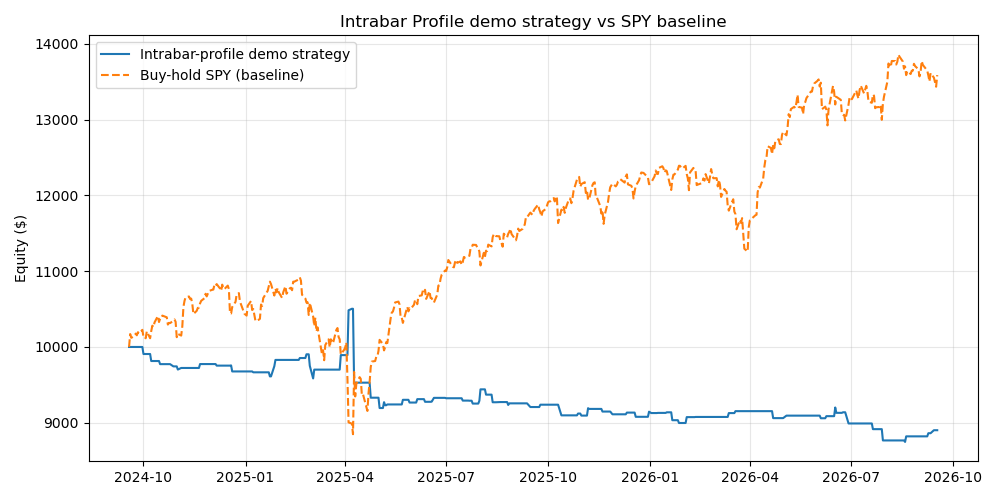
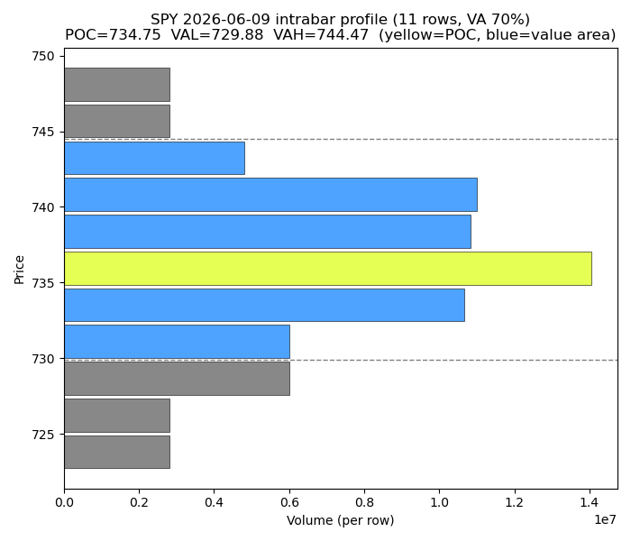

Intrabar Profile
作者 KioseffTrading · TradingView 开源 Pine Script v6（MPL 2.0，脚本页显示发布于 2025-11-20）· 原脚本链接
脚本介绍
Intrabar Profile 是一个低级别周期（lower-timeframe）profile 工具： 在每一根 K 线内部画出成交量分布（volume profile）或方向性 delta 分布（delta profile）。它想回答的不是"这根 K 线收涨还是收跌"， 而是——这根 K 线内部，成交量到底发生在哪里？
- Volume Profile 模式（VP）：看参与度发生在哪里、成交量集中在哪个价位、POC 和价值区落在哪。
- Delta Profile 模式：用低级别 K 线的涨跌方向给成交量加正负号，看买方/卖方压力在 K 线内部的哪一段占优—— "成交量只是存在，还是明显偏向某一方？"
- POC（Point of Control）：每根 K 线内部成交量最大的价位档，标黄高亮。
- Value Area（价值区）：从 POC 向两侧扩展、覆盖 70% 总量的价格区间，区分高参与区和低参与区。
- Granularity：5 分钟 / 1 分钟 / 1 秒 / 1 tick 四档（默认 1 分钟）；越细的粒度重建越精细，但取决于 TradingView 账号能拿到的数据。
作者在脚本说明里给了几组解读范式：阳线 + 成交量集中在上沿 → 可能在高位被接受； 阳线 + 大量成交在下沿 → 可能被吸收；大 K 线 + 稀薄 profile → 快速移动、参与不均衡； 强 delta 但 K 线走不动 → 可能被吸收或对冲。以及一句关键定调： "this is an analytical visualization tool, not a predictive engine"—— 这是个分析可视化工具，不是预测引擎。
逻辑拆解
全脚本 228 行，核心就一个函数 everyBarVP()，对每根 chart bar 执行：
- 取 LTF 数据：
request.security_lower_tf("", tf, [high, low, volume * direction()])， 拿到该 bar 内部所有低级别 K 线的高低点和带符号成交量。direction()=sign(close - close[1])（tick 级用 bid/ask 判断）；注意close[1]是 LTF 序列上的上一根，是连续序列不断开的。 - 分档：
Range = (high - low) / (rows - 1)，默认rows = 11， 档位levels[i] = low + Range * i（i = 0..10）。 - 分摊：每根 LTF bar 用
binary_search_leftmost找到其 high/low 落在哪两个档位bot..top，div = 带符号成交量 / (|top - bot| + 1)平均分摊到覆盖的每一档：vp累加|div|，delta累加div。 - POC：
vp最大值的档位（并列取第一个）。 - Value Area：从 POC 出发向上下两侧逐档扩展，累计成交量达到总量 70% 即停。
- 显示：VP 模式把每档成交量归一化到 1–10，用 "█" 的个数画迷你 profile； Delta 模式用带符号值归一化，正/负分别向左/右画；价值区外的档位变灰，POC 档标黄。
tf 的 switch 只映射了
1-Minute→"1"、1-Second→"1S"、1-Tick→"1T"，"5-Minute" 选项没有映射，
选它会得到 na 时间框架；② VA 灰显条件写的是 i <= indDn or i >= indUp，
按这个写法 POC 自己恰好卡在边界上（疑似 off-by-one，本意应为 i < indDn or i > indUp）。
我们的 Python 复刻取循环结束时的累积区间 [indDn, indUp] 为价值区，并在下面注明了这一差异。Python 验证
backtest.py 里的 intrabar_profile() 是对 everyBarVP() 的逐行直译
（档位定位、带符号成交量分摊、POC、VA 扩展循环都照搬）。时间框架映射上做了一个诚实折中：
- 资产：SPY（作者工具是通用型可视化工具，无指定资产）。
- 周期：chart = 日线，LTF = 60 分钟。Yahoo 对 1m/5m 只保留最近约 60 天数据， 2 年跨度下 60m 是最小可用的日内级别；这与上一篇 v2 回测的"日线→60m"映射一致。
- 参数：作者默认——rows = 11，value area 70%。
- 数据：2 年小时线（2024-09-18 → 2026-09-17）已下载存档在
tradingview-pine-scripts/intrabar-profile/data/，脚本直接读本地文件。
Sanity 检查（501 根日线，全部通过）：每根日线的 vp 总量等于其内部 |带符号小时成交量| 之和（最大绝对误差 2.98e-08）；POC 档确为最大档；价值区覆盖 ≥70%； delta 总量等于带符号成交量之和（符号守恒）；POC 落在价值区内。复刻逻辑可信。
演示策略（规则写死、无未来函数；作者工具本身不产生信号，这里只做演示）： 信号在日线收盘产生——收盘 > 当日 VAH（价值区上沿）→ 次日做多（高于价值区被接受→动量延续）； 收盘 < 当日 VAL（价值区下沿）→ 次日做空；收盘在价值区内 → 空仓。 信号日收盘进、次日收盘出，持有 1 天；$10k 名义本金，一次一笔，无杠杆，无手续费/滑点。
| 指标 | 策略（VA 突破演示） | Baseline：SPY 买入持有 |
|---|---|---|
| 区间收益 | −10.98% | +35.87% |
| 超额收益（策略 − baseline） | −46.85% | |
| 交易次数 | 80（胜率 48.75%，盈亏比 0.71，平均每笔 −0.134%） | |
| 最大回撤 | −16.72% | — |
| 样本区间 | 2024-09-18 → 2026-09-17（501 根日线） | |


上图：2026-06-09（近 90 天波幅最大的一天）SPY 日内 profile 重建——黄色为 POC 档， 蓝色为价值区，灰色为价值区外，虚线为 VAL/VAH。11 个档位、70% 价值区，与源码算法一致。
结论与局限
- 复刻验证通过：Python 版 profile 重建与源码算法一致，POC/价值区/delta 的数学关系都对得上。
- 演示策略跑输：胜率接近抛硬币（48.75%），但盈亏比只有 0.71——"收盘站上价值区就追"在两年里稳定小亏， 而同期 SPY 买入持有 +35.87%。单根 K 线的内部结构，不足以构成可独立运行的交易系统。
- 这恰好印证了作者的定调：分析可视化工具，不是预测引擎。它的价值在辅助读 K 线质量 （吸收 vs 失衡、接受 vs 拒绝），而不是直接生成买卖信号。
完整源码
原脚本为 TradingView 开源脚本，作者 KioseffTrading，MPL 2.0 许可，转载请注明出处并查看原页面的许可说明：
// Archived from TradingView for study purposes (MPL 2.0).
// Source: https://www.tradingview.com/script/j38vuAvW-Intrabar-Profile-Kioseff-Trading/
// All rights belong to the original author KioseffTrading.
// This Pine Script® code is subject to the terms of the Mozilla Public License 2.0 at https://mozilla.org/MPL/2.0/
// © KioseffTrading
//@version=6
indicator("Intrabar Profile [Kioseff Trading]", overlay = true, max_boxes_count = 500, max_labels_count = 500, max_lines_count = 500, max_polylines_count = 100, calc_bars_count = 500)
enum granularity
m5 = "5-Minute"
m1 = "1-Minute"
s1 = "1-Second"
t1 = "1-Tick"
profType = input.string(defval = "VP", title = "Profile Type", options = ["VP", "Delta"])
gran = input.enum(defval = granularity.m1, title = "Granularity", options = [granularity.m5, granularity.m1, granularity.s1, granularity.t1])
upColAdv2 = input.color(defval = #96d3c8, title = "Buy-Side Color", inline = "ADV UP", group = "Focus Mode"), upColAdv = input.color(defval = #00ffff, title = "", inline = "ADV UP", group = "Focus Mode")
dnColAdv2 = input.color(defval = #d39696, title = "Sell-Side Color", inline = "ADV DN", group = "Focus Mode"), dnColAdv = input.color(defval = #8f1b1b, title = "", inline = "ADV DN", group = "Focus Mode")
advCol = input.color(defval = color.white, title = "Text Color", group = "Focus Mode")
rows = input.int(defval = 11, minval = 5, maxval = 200, title = "Profile Rows")
showVolAtLevel = input.bool(defval = false, title = "Show Volume At Level", group = "Mini Profile Main Settings")
miniProfTransp = input.int(0, minval = 0, maxval = 100, title = "Mini Profile Transparency", group = "All Profile Settings")
showVA = input.bool(defval = true, title = "Show VA", group = "VA")
customPOCcol = input.bool(defval = true, title = "", inline = "POC")
pocCol = input.color(defval = #e5ff55, title = "POC Color", inline = "POC")
var tf = switch gran
granularity.m1 => "1"
granularity.s1 => "1S"
granularity.t1 => "1T"
direction() =>
if gran == granularity.t1
switch
close == bid => -1
close == ask => 1
=> math.sign(close - close[1])
else
math.sign(close - close[1])
everyBarVP() =>
[h, l, vol] = request.security_lower_tf("", tf, [high, low, volume * direction()])
if vol.size() > 0
Range = (high - low) / (rows - 1)
levelsArr = array.new<float>(rows, 0)
vpArr = array.new<float>(rows, 0)
deltaArr = array.new<float>(rows, 0)
for i = 0 to rows - 1
levelsArr.set(i, low + (Range * i))
for [i, data] in vol
bot = levelsArr.binary_search_leftmost(l.get(i))
top = levelsArr.binary_search_leftmost(h.get(i))
div = data / (math.abs(top - bot) + 1)
absDiv = math.abs(div)
for x = bot to top
vpArr .set(x, vpArr.get(x) + absDiv)
deltaArr.set(x, deltaArr.get(x) + div)
poc = vpArr.indexof(vpArr.max()),
indUp = poc, indDn = poc, sum = 0., size = vpArr.size()
total = vpArr.sum() * .7
for i = 0 to size - 1
if indUp == indDn
sum += vpArr.get(indUp)
if sum >= total
break
indUp += 1
indDn -= 1
continue
if indUp < size
sum += vpArr.get(indUp)
if sum >= total
break
indUp += 1
if indDn > -1
sum += vpArr.get(indDn)
if sum >= total
break
indDn -= 1
if vpArr.sum() != 0
minVol = vpArr.min(), rangeVol = vpArr.range()
absDeltaArr = deltaArr .abs()
minDelta = absDeltaArr.min()
rangeDelta = absDeltaArr.range()
for [i, data] in vpArr
norm = int(na), getDelta = deltaArr.get(i), absDelta = absDeltaArr.get(i)
if profType == "VP"
norm := math.round(1 + ((data - minVol) * 10) / rangeVol)
else
norm := math.round(1 + ((absDelta - minDelta) * 10) / rangeDelta)
if math.sign(getDelta) == -1
norm *= -1
level = levelsArr.get(i)
getText = "█"
signNorm = math.sign(norm)
if signNorm == 1 or profType == "VP"
if norm > 1
for x = 0 to math.min(norm - 1, 9)
getText += "█"
if str.length(getText) < 10
for x = str.length(getText) to 10
getText += " "
else if str.length(getText) == 10
getText += " "
else
getText := ""
width = 11
blocks = math.min(math.abs(norm), width)
spaces = width - blocks
if spaces > 0
for x = 0 to spaces - 1
getText += " "
if blocks > 0
for x = 0 to blocks - 1
getText += "█"
volAtLevel = str.tostring(getDelta, format.volume)
if showVolAtLevel
getText := volAtLevel + getText
col = switch math.sign(close - open)
1 => color.new(color.from_gradient(norm, 0, 10, upColAdv, upColAdv2), miniProfTransp)
-1 => color.new(color.from_gradient(norm, 0, 10, dnColAdv, dnColAdv2), miniProfTransp)
if showVolAtLevel
if profType == "VP" or signNorm == 1
getText += switch
profType == "VP" => str.tostring(data, format.volume)
=> str.tostring(getDelta, format.volume)
if showVA
if i <= indDn or i >= indUp
col := color.new(color.gray, miniProfTransp)
if customPOCcol
if i == poc
col := pocCol
if profType == "VP" or signNorm == 1
box.new(bar_index, level, bar_index + 1, level + Range, text = getText,
text_halign = text.align_left,
text_valign = text.align_center,
border_color = color(na),
bgcolor = #00000000,
text_color = col,
force_overlay = true
)
else
box.new(bar_index - 1, level, bar_index, level + Range, text = getText,
text_halign = text.align_right,
text_valign = text.align_center,
border_color = color(na),
bgcolor = #00000000,
text_color = col,
force_overlay = true
)
everyBarVP()